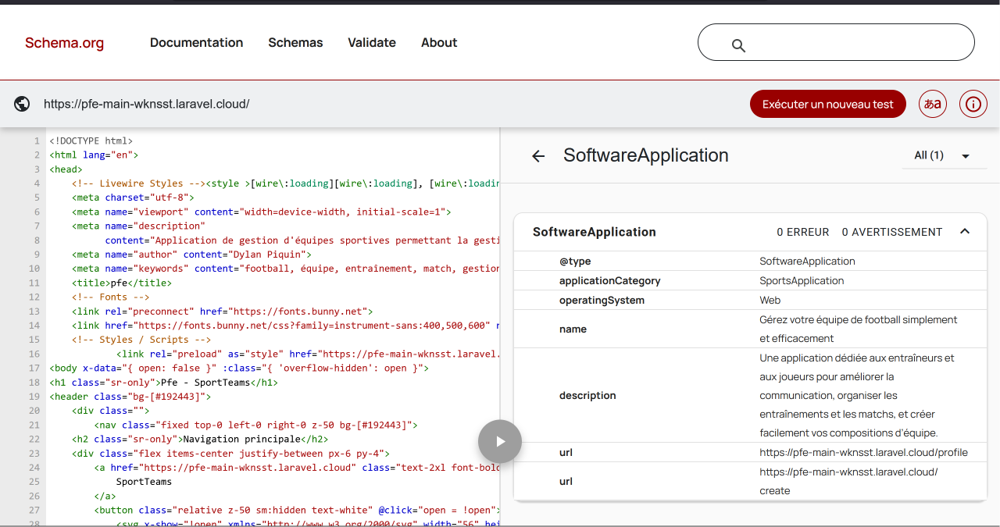
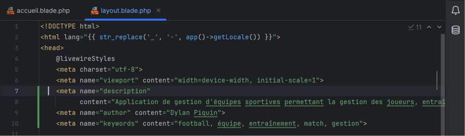
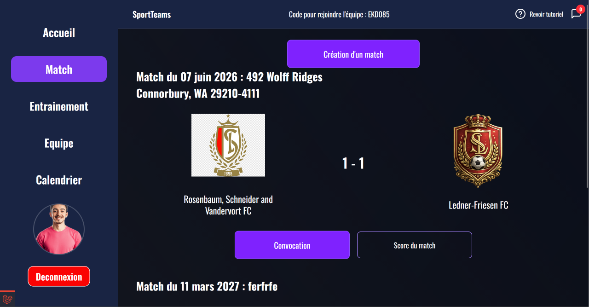
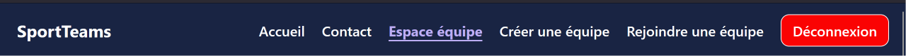
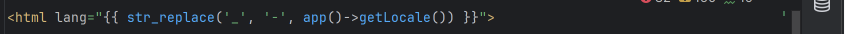
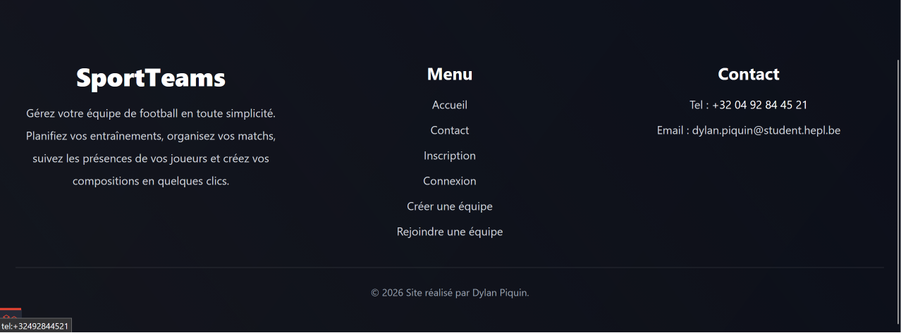
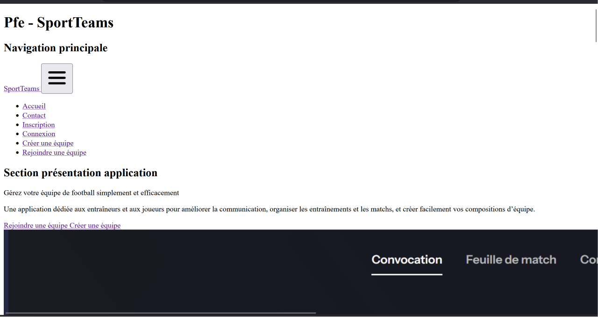
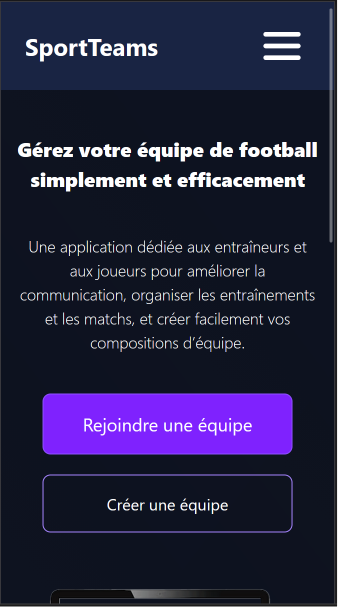
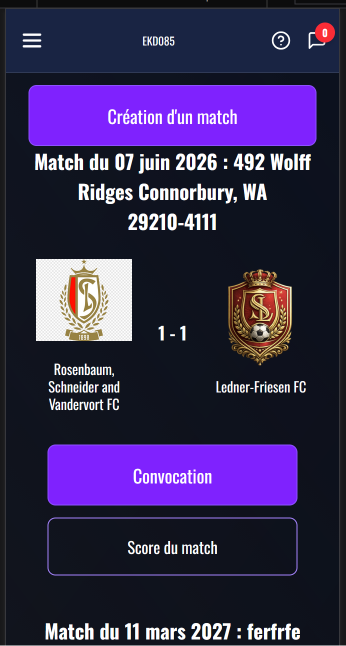
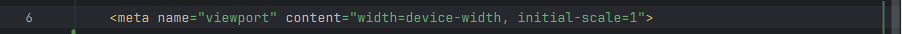

Mise en évidence des efforts apportés à la sémantique HTML et au respect des bonnes pratiques
Mise en place d'une hiérarchie cohérente des titres (h1, h2, h3) sur l'ensemble des pages afin de respecter
la Heading Map et de faciliter la navigation des technologies d'assistance.
Utilisation des balises sémantiques HTML5 telles que header, main, section, article, nav et aside lorsque
cela était pertinent.
Ajout de titres invisibles (sr-only) pour les zones de navigation afin d'améliorer l'accessibilité des
lecteurs d'écran.
Vérification de la validité du code HTML à l'aide du validateur W3C et correction des erreurs relevées
(identifiants dupliqués, structure incorrecte des listes, éléments mal imbriqués, etc.).
Mise en place d'attributs alt sur les images afin de fournir une alternative textuelle lorsque cela était
nécessaire.
Respect de l'unicité des identifiants HTML (id) pour garantir un document valide.
Utilisation d'éléments adaptés à leur rôle, par exemple des listes de navigation construites avec les
balises ul et li, ou encore des cartes de contenu représentées par des balises article.
Micros data

2. Audit de performance et d’accessibilité
Afin d'évaluer la qualité du site, plusieurs audits ont été réalisés à l'aide de Lighthouse
ainsi que des outils de vérification des contrastes de couleurs. Ces analyses permettent de contrôler les
performances, l'accessibilité, le respect des bonnes pratiques ainsi que le référencement.
2. Audit de performance et d’accessibilité - Rapport lightouse
Performances côté serveur
J'essaie au maximum d'éviter les requêtes dupliquées afin de garantir de meilleures performances côté serveur. Je fais également attention à ne charger que les modèles et relations nécessaires pour limiter le nombre de requêtes exécutées et réduire la quantité de données récupérées. Cela permet d'optimiser les temps de réponse de l'application et d'éviter des traitements inutiles.
Ce test permet de vérifier que lorsqu'un coach crée un nouveau match, les joueurs de son équipe reçoivent bien
une notification. Pour cela, je crée un coach, une équipe ainsi qu'un joueur appartenant à cette équipe. Je
simule ensuite la création d'un match en remplissant les différents champs du formulaire puis j'exécute
l'enregistrement. Enfin, je vérifie que le joueur a bien reçu une notification de type NewMatchNotification. Ce
test permet de s'assurer que les joueurs sont correctement informés lorsqu'un nouveau match est ajouté par leur
coach.
Test de l'ajout automatique des joueurs à un entraînement
Après avoir créé un
entraîneur, une équipe et un joueur, je procède à la création d'un nouvel entraînement via le composant
Livewire. Une fois l'opération terminée, je contrôle que le joueur a bien été ajouté à la liste des participants
avec le statut "en attente". Cette vérification permet de garantir que les joueurs sont automatiquement pris en
compte dès la planification d'un entraînement et qu'ils peuvent ensuite indiquer si ils sont présent ou non
lorsqu'ils recoivent le message.
Test de la création d'une convocation pour un match
Ce test reproduit la création d'une convocation pour un match. Après avoir préparé les données nécessaires
(un entraîneur, une équipe, un match et un joueur), je sélectionne le joueur puis j'enregistre la convocation.
L'objectif est de contrôler que le joueur est bien ajouté à la liste des participants avec le statut "en
attente". Cette vérification confirme que la gestion des convocations fonctionne correctement et que les joueurs
peuvent ensuite répondre à leur convocation directement depuis l'application.
Ce test permet de vérifier que la composition d'équipe est correctement
enregistrée lorsqu'un entraîneur prépare son match. Pour réaliser ce test,
je crée un coach, une équipe, un match ainsi qu'un joueur appartenant à
cette équipe. Je simule ensuite l'attribution de ce joueur à un poste sur
le terrain avant d'enregistrer la composition.
Lors de l'enregistrement, l'application parcourt les différents postes
sélectionnés et sauvegarde les associations entre les joueurs et leurs
positions sur le terrain. Cette étape est importante car elle permet de
conserver la composition choisie par l'entraîneur pour le match.
Pour terminer, le test vérifie que le joueur a bien été enregistré au
poste attendu dans la base de données. Ce test permet donc de garantir
que les choix réalisés par l'entraîneur lors de la préparation tactique
du match sont correctement sauvegardés et pourront être retrouvés lors
des prochaines consultations.
Quelques autres tests réalisés
Afin de garantir le bon fonctionnement de l'application, plusieurs tests automatisés ont été mis en place avec PEST et Livewire. Ces tests permettent de vérifier les fonctionnalités critiques telles que l'authentification, l'inscription des utilisateurs, la création d'entraînements ainsi que les relations entre les différentes entités de l'application.
Association des joueurs à un match
test('game can have players', function () {
$game = Game::factory()->create();
$players = Player::factory()->count(3)->create();
$game->players()->attach(
$players->pluck('id')->toArray(),
['status' => 'present']
);
expect($game->players)->toHaveCount(3);
});
Ce test permet de vérifier qu'un entraîneur peut bien accéder à la
fonctionnalité de convocation depuis la page d'un match. Pour cela,
je crée un coach, une équipe et un match puis je simule sa connexion.
Le test ouvre ensuite la page du match et vérifie que le texte
"Enregistrer les convocations" est bien affiché.
Cela permet de s'assurer que la fonctionnalité est visible et accessible
depuis le role d'un coach car le joueur lui n'a pas accès.
Test de l'accès à la page des matchs
test('match page is accessible', function () {
$coach = User::factory()->create();
Team::factory()->create([
'user_id' => $coach->id,
]);
$this->actingAs($coach);
visit('/match')
->assertSee('Match');
});
Ce test permet de vérifier qu'un entraîneur peut accéder à la page des
matchs de l'application. Pour cela, je crée un coach ainsi qu'une équipe
puis je simule sa connexion.
Le test ouvre ensuite la page des matchs et vérifie que le texte
"Match" est bien affiché. Cela permet de s'assurer que
la page est correctement accessible pour l'utilisateur.
L'objectif de ce test est de s'assurer qu'un entraîneur peut consulter
la page associée à un entraînement. Pour reproduire ce scénario, je crée
un entraîneur, son équipe ainsi qu'un entraînement lié à celle-ci.
Une fois connecté, l'utilisateur accède directement à la page de
l'entraînement. La présence du texte "Entraînement"
confirme que la page a bien été chargée et que l'utilisateur peut
consulter les informations liées à cette séance.
Ce test vérifie que la fonctionnalité de gestion des convocations est bien
accessible depuis la page d'un match. Pour cela, je crée un entraîneur,
une équipe ainsi qu'un match puis je simule la connexion de l'entraîneur.
Une fois sur la page du match, le test vérifie que le texte
"Enregistrer les convocations" est présent. Cela permet
de confirmer que l'entraîneur peut accéder à l'outil lui permettant de
gérer les joueurs convoqués pour le match.
Test de l'affichage des informations de l'équipe adverse
test('away team information is displayed', function () {
$coach = User::factory()->create();
$team = Team::factory()->create([
'user_id' => $coach->id,
]);
$game = Game::factory()->create([
'team_id' => $team->id,
'user_id' => $coach->id,
'name_away' => 'Anderlecht',
]);
$this->actingAs($coach);
visit('/match/' . $game->id)
->assertSee('Anderlecht');
});
Ce test vérifie que les informations de l'équipe adverse sont bien
affichées sur la page du match. Pour cela, je crée un entraîneur, une
équipe ainsi qu'un match en renseignant le nom de l'équipe adverse.
Une fois connecté, l'entraîneur accède à la page du match. Le test
vérifie alors que le nom de l'équipe adverse apparaît bien dans
l'interface. Cela permet de s'assurer que les informations importantes
du match sont correctement affichées à l'utilisateur.
Audit Opquast
Catégorie : Contenu
Règle 1 : Le code source de chaque page contient une métadonnée qui en décrit le contenu
État : Respectée
Justification :
L'application intègre des métadonnées HTML dans l'en-tête de chaque page.
Une balise meta description décrit le contenu général de
l'application tandis qu'une balise author identifie son auteur.
Ces informations facilitent le référencement et l'identification du contenu.

Figure 1 : Métadonnées décrivant le contenu de l'application.
Règle 2 : Les dates sont présentées dans des formats explicites
État : Respectée
Justification :
S'assurer que le mois est écrit en toutes lettres (« décembre ») ou en abrégé (« déc. »), mais pas au
format numérique.
Indiquer les 4 chiffres de l'année.

Figure 2 : Photo d'une date respectée.
Catégorie : Données personneles
Règle n° 19 : Un mécanisme de prévention des usurpations de compte ou d'identité est proposé
État : Respectée
Justification :
Le nombre de tentatives d’usurpations de compte ou de vol d’identité sur le web est considérable. Pour
éviter cela, les services web peuvent mettre en place des mécanismes permettant de vérifier qu’il s’agit
bien de vous, et que c’est bien vous qui souhaitez effectuer vos opérations en ligne. Plusieurs
mécanismes peuvent être mis en place en fonction de la criticité des contenus et des services concernés.
Par exemple, si vous entendez parler de l’authentification à double facteur, il ne s’agit pas d’une
double distribution matinale du courrier, mais, notamment, d’une vérification de votre identité avec un
numéro de téléphone mobile, ou via un mail ou une application dédiée.
Règle n° 23 - Il est possible de se déconnecter des espaces privés.
État : Respectée
Justification :
Si vous êtes connecté à un espace privé, vous accédez généralement à des informations qui ne concernent
que vous. En conséquence, vous avez à tout moment besoin de pouvoir fermer l’accès à ces informations.
Vous n’avez certainement pas envie que n’importe qui puisse venir sur votre poste de travail, tablette
ou mobile et puisse directement accéder aux contenus. Il est donc fondamental de pouvoir à tout moment
vous déconnecter du service.

Catégorie : Formulaires
Règle 1 : Chaque champ de formulaire est associé à son étiquette
État : Respectée
Justification :
Les formulaires de l'application utilisent des balises
label associées aux champs via l'attribut
for, permettant aux utilisateurs et aux technologies
d'assistance d'identifier clairement chaque champ.
Figure 1 : Exemple d'association entre un label et un champ de saisie.
Règle 2 : Les erreurs de saisie sont explicites
État : Respectée
Justification :
Lorsqu'une donnée saisie est invalide ou manquante, un message
d'erreur est affiché directement sous le champ concerné grâce aux
mécanismes de validation de Laravel et Livewire. L'utilisateur
identifie immédiatement la correction à effectuer.
Figure 2 : Messages d'erreur affichés lors d'une saisie incorrecte.
Catégorie :Identification & Contact
Règle 107 : Au moins deux moyens de contact sont proposés
État : Respectée
Justification :
L'application met à disposition plusieurs moyens de contact.
Les utilisateurs peuvent utiliser le formulaire de contact intégré
au site, contacter l'organisation par téléphone ou envoyer un
courrier électronique à l'adresse indiquée dans le footer du site client.
Figure 1 : Plusieurs moyens de contact sont proposés aux utilisateurs.
Règle n° 114 - L'identité de la personne ou du service responsables des contenus est indiquée.
État : Respectée
Justification :
Permettre aux utilisateurs d'identifier sans ambiguïté un interlocuteur physique capable de répondre aux
questions éventuelles sur les contenus proposés, ou d'assumer les responsabilités liées à ces contenus.
Figure 2 : Identification de la personne a qui appartient le site.
Catégorie : images
Règle n° 117 - Chaque image-lien est dotée d'une alternative textuelle appropriée.
État : Respectée
Justification :
Les images utilisées comme liens dans l'application disposent toutes d'un texte alternatif pertinent
via l'attribut alt.
Règle n° 130 - Le code source de chaque page indique la langue principale du contenu.
État : Respectée
Justification :
La langue principale du contenu est correctement définie dans le code source à l'aide de l'attribut
lang="fr" sur la balise <html>. Les navigateurs et technologies
d'assistance peuvent ainsi interpréter correctement le contenu de la page.
Catégorie : Internalisation
Règle n° 130 : Le code source de chaque page indique la langue principale du contenu
État : Respectée
Justification :
Une page web est rédigée dans une langue qui n’est pas forcément identifiable par les outils qui
analysent les pages. Cette information doit être fournie à tous les outils automatiques dans le code
source de celles-ci.

Règle n° 128 - L'indicatif international est disponible pour tous les numéros de téléphone.
État : Respectée
Justification :
Si votre cible est internationale, cette règle vous semblera d’emblée pertinente. Si ce n’est pas le
cas, vous en douterez peut-être, et pourtant, sur le web, un numéro de téléphone peut être cherché et
composé depuis n’importe quel point du globe.

Catégorie : Liens
Règle n° 136 - Chaque lien est doté d'un intitulé dans le code source.
État : Respectée
Justification :
Tous les liens présents dans l'application possèdent un intitulé explicite dans le code source.
Les utilisateurs peuvent ainsi comprendre la destination ou l'action associée à chaque lien.
Règle n° 141 - Les liens visités et non visités sont visuellement différenciés.
État : Respectée
Justification :
La page actuellement consultée est mise en évidence dans le menu de navigation grâce à une couleur
différente et un soulignement. L'utilisateur peut ainsi identifier rapidement sa position dans le site
et se repérer plus facilement lors de sa navigation.
Catégorie : Navigation
Règle n° 157 - Les items actifs de menu sont signalés.
État : Respectée
Justification :
Parmi les questions essentielles que peuvent se poser les internautes, où suis-je ? est l’une des
plus fréquentes. Alors, pour répondre à cette question, vous pourriez penser spontanément au fil
d’Ariane. Mais il y a plus simple : faire en sorte que l’item de menu actif soit signalé.
Règle n° 155 - Il est possible de revenir à la page d'accueil depuis toutes les pages.
État : Respectée
Justification :
Une page d’accueil bien conçue aide considérablement les internautes à s’orienter ou se réorienter. À
tout moment de leur navigation, ils peuvent souhaiter y revenir.
Catégorie : Présentation
Règle n°183 - Le contenu et le sens de chaque page ne sont pas altérés lorsque les styles sont
désactivés.
État : Respectée
Justification :
Après désactivation des feuilles de style CSS, les contenus restent
lisibles et compréhensibles. Les éléments de navigation, les titres,
les liens ainsi que les principales fonctionnalités demeurent
accessibles. L'ordre des informations est conservé et le sens général
de la page n'est pas altéré malgré l'absence de mise en forme.

Figure 1 : Le contenu reste compréhensible lorsque les styles sont désactivés.
Règle n°186 - La taille des éléments cliquables est suffisante.
État : Respectée
Justification :
Les boutons, liens et autres éléments interactifs de l'application
disposent de dimensions adaptées à une utilisation confortable sur
ordinateur et appareils tactiles. Les zones cliquables sont
suffisamment grandes pour limiter les erreurs de sélection et
faciliter la navigation des utilisateurs.


Figure 2 : Les éléments cliquables disposent d'une taille suffisante pour une utilisation
confortable.
Catégorie : Structure et code
Règle n° 233 - Le codage de caractères utilisé est UTF-8.
État : Respectée
Justification :
Chaque page de l'application contient une balise meta définissant le jeu de caractères UTF-8. Cette
métadonnée permet au navigateur d'interpréter correctement les contenus et d'afficher sans erreur les
caractères spéciaux, les accents et les symboles utilisés dans l'application.
Règle n° 234 - Le contenu de chaque page est organisé selon une structure de titres hiérarchisée.
État : Respectée
Justification :
J'ai respecté le headings map
Figure 2 : Les éléments cliquables disposent d'une taille suffisante pour une utilisation
confortable.
Catégorie : Accessibilité
Règle n° 23 - Il est possible de se déconnecter des espaces privés.
État : Respectée
Justification :
Si vous êtes connecté à un espace privé, vous accédez généralement à des informations qui ne
concernent que vous. En conséquence, vous avez à tout moment besoin de pouvoir fermer l’accès à ces
informations. Vous n’avez certainement pas envie que n’importe qui puisse venir sur votre poste de
travail, tablette ou mobile et puisse directement accéder aux contenus. Il est donc fondamental de
pouvoir à tout moment vous déconnecter du service.
Règle n° 80 - En cas de rejet des données saisies dans un formulaire, les raisons du rejet sont
indiquées à l'utilisateur.
État : Respectée
Justification :
Ce qui peut sembler évident pour l’auteur d’un formulaire risque de l’être beaucoup moins pour ses
utilisateurs : aidez-les à chaque fois que possible.
Catégorie : Basics
Règle n° 17 - La création de compte est possible sans recours à un système d'identification tiers.
État : Respectée
Justification :
Les systèmes d’identification tiers proposés par Facebook, LinkedIn et bien d’autres sont très
pratiques. Ils évitent aux utilisateurs d’avoir à créer un identifiant et un mot de passe et ils
permettent aux créateurs de sites de se reposer sur des acteurs de référence. Mais le prix est
élevé. La fermeture ou la désactivation d’un compte chez le fournisseur tiers rendra la connexion
impossible. Le fonctionnement du système de connexion tiers rendra totalement dépendant le créateur
de sites.
Règle n° 76 - Les caractères saisis dans un champ de mot de passe peuvent être affichés en clair.
État : Respectée
Justification :
Lorsque vous saisissez vos mots de passe, vous avez l’habitude de le faire dans des champs dédiés, où
chaque caractère saisi est remplacé par un point ou une étoile. C’est bien, car cela évite la
consultation au-dessus de votre épaule. Mais très souvent, notamment pour les mots de passe longs ou
dans des contextes mobiles, cela peut être gênant. Dès lors, pourquoi ne pas donner la possibilité aux
utilisateurs d’afficher leur mot de passe à leur demande, lorsqu’ils en ont besoin et qu’ils jugent que
cela ne présente pas de risque en matière de confidentialité ?
Catégorie : Mobile
Règle n° 193 - Les fonctionnalités de zoom ne sont pas bloquées.
État : Respectée
Justification :
Il est toujours très décevant, face à un texte trop petit affiché sur sa tablette ou son smartphone,
de s’apercevoir qu’on ne peut pas l’agrandir.

Règle n° 95 - Les champs de saisie de type mail, URL, téléphone, nombre, recherche, mots de passe,
heure et date sont dotés du type approprié.
État : Respectée
Justification :
Dans les formulaires, il est possible de préciser quels sont les types de données attendues. Cela a de
nombreux avantages. Cela permet aux systèmes d’exploitation mobile d’afficher des claviers adaptés ou de
vérifier que les données respectent une forme ou une syntaxe. Bref, c’est souvent très intéressant.
Test utilisateur - Anthony
Tâche n°1 : Création de la première équipe
Profil : Coach utilisant l'application pour la première fois.
Objectif :
Le coach vient de découvrir l'application et souhaite créer sa première
équipe de football afin de pouvoir gérer ses joueurs et communiquer avec eux.
Consigne donnée à l'utilisateur :
"Créer ta première équipe de foot"
Observations :
Anthony n'a pas eu de difficulté a se créer sa première équipe
Tâche n°2 : Création d'un entrainement
Profil : Coach utilisant l'application pour la première fois aimerait créer son première
entrainement.
Objectif :
Le coach vient de découvrir l'application et souhaite créer son première
entrainement
Consigne donnée à l'utilisateur :
"Créer ton première entrainement
Observations :
Lors de la création d'un entraînement, j'ai pu remarquer que le premier réflexe d'Anthony a été de se rendre sur
la page des entraînements afin d'en créer un. Ce comportement est tout à fait logique. Cependant, en arrivant
sur cette page, je n'avais pas prévu la possibilité de créer directement un entraînement depuis celle-ci.
Anthony a donc dû chercher quelques instants avant de trouver comment créer son premier entraînement.
La conclusion que j'en ai tirée est qu'il serait pertinent d'ajouter un bouton permettant de créer un
entraînement directement depuis la page des entraînements. Ainsi, lorsqu'un utilisateur souhaite créer
rapidement un nouvel entraînement, il peut le faire immédiatement sans avoir à rechercher la fonctionnalité
ailleurs dans l'application.
Tâche n°3 : Création d'un match
Profil : Coach utilisant l'application pour la première fois aimerait créer son premier match
Objectif :
Le coach vient de découvrir l'application et souhaite créer son premier match
Consigne donnée à l'utilisateur :
"Créer ton premier match
Observations :
Même problème que pour les entraînements : son premier réflexe a été de se rendre sur la page des matchs afin
d'en ajouter un directement. Cependant, je n'avais pas prévu de bouton de création sur cette page, comme c'était
également le cas pour les entraînements. L'utilisateur a donc dû chercher la fonctionnalité avant de pouvoir
créer son match.
Suite à cette observation, j'ai ajouté un bouton permettant de créer un match directement depuis la page des
matchs, afin de rendre cette action plus intuitive et plus rapide pour les utilisateurs.
Tâche n°4 : Convocation des joueurs
Profil : Coach
Objectif :
Le coach vient de découvrir l'application et souhaite faire la convocation pour le match
Consigne donnée à l'utilisateur :
"Fait la convocation pour le match "
Observations :
La tache a été réalisée facilement par Anthony, mais la question qui a été posée de sa part est : est-ce qu'il y
a un nombre minimum de joueurs que le coach peut convoquer ? C'est une question intéressante. Il serait
intéressant d'ajouter un nombre minimum. Après, le coach sait combien de joueurs il dispose et quelles sont les
règles à ce niveau-là, donc ce serait pour lui donner plus de contrôle, mais ce n'est pas non plus indispensable
pour moi.
Tâche n°5 : Création de la composition
Profil : Coach
Objectif :
Le coach vient de découvrir l'application et souhaite faire sa première composition d'équipe
Consigne donnée à l'utilisateur :
"Crée ta composition d'équipe
Observations :
Donc, dans cette dernière étape qui était de créer sa composition d'équipe pour un match, Anthony a d'abord
essayé de drag and drop les joueurs. Je pense que c'est dû au fait que, quand il a cliqué sur une position, il
n'y avait pas d'état actif, donc il a pensé qu'il devait les faire glisser. J'ai donc, sur base de cette
observation, rajouté le fait que quand on clique sur une position, il y ait un état actif avec une couleur pour
différencier le poste cliqué et le reste des joueurs.
On a pu observer un bug aussi, qui était que quand il voulait mettre le premier joueur de la liste à une
position, il ne se mettait pas ou alors il était déjà mis mais ne s'affichait pas comme déjà placé.
Test utilisateur - Mon papa
Tâche n°1 : Création de la première équipe
Profil : Coach utilisant l'application pour la première fois.
Objectif :
Le coach vient de découvrir l'application et souhaite créer sa première
équipe de football afin de pouvoir gérer ses joueurs et communiquer avec eux.
Consigne donnée à l'utilisateur :
"Créer ta première équipe de foot"
Observations :
Mon papa n'a pas eu de difficulté a se créer sa première équipe
Tâche n°2 : Création d'un entrainement
Profil : Coach utilisant l'application pour la première fois aimerait créer son première
entrainement.
Objectif :
Le coach vient de découvrir l'application et souhaite créer son première
entrainement
Consigne donnée à l'utilisateur :
"Créer ton première entrainement
Observations :
Dans cette 2ème étape, c'est très intéressant ce qu'il s'est passé car mon papa est allé dans le calendrier pour
pouvoir créer son premier entraînement et, en voulant en ajouter un, il a cliqué sur un jour où il voulait créer
son entraînement. Rien ne s'est passé car je n'avais pas mis cela en place, ce qui l'a forcément un peu perturbé
parce qu'il a l'habitude de pouvoir cliquer sur un jour dans le calendrier et créer l'événement directement.
Sur base de cela, j'ai fait en sorte que quand on clique sur un jour, on ait le choix entre créer un
entraînement ou un match, ce qui, je pense, sera beaucoup plus intuitif pour les utilisateurs.
Tâche n°3 : Création d'un match
Profil : Coach utilisant l'application pour la première fois aimerait créer son premier match
Objectif :
Le coach vient de découvrir l'application et souhaite créer son premier match
Consigne donnée à l'utilisateur :
"Créer ton premier match
Observations :
Pas de soucis pour la création du match mais même remarque pour le calendrier
Tâche n°4 : Convocation des joueurs
Profil : Coach
Objectif :
Le coach vient de découvrir l'application et souhaite faire la convocation pour le match
Consigne donnée à l'utilisateur :
"Fait la convocation pour le match "
Observations :
La première chose dont on a pu discuter dans cette étape est le fait de pouvoir revoir le tutoriel si jamais il
le ferme sans faire exprès ou alors s'il ne se souvient plus comment on doit faire. Il aimerait avoir la
possibilité de pouvoir revoir le tutoriel à sa guise et ne pas être frustré par le fait de ne plus pouvoir
l'avoir en cas de mauvaise manipulation.
Sur base de cela, j'ai fait en sorte que dans la navigation, on puisse cliquer sur un bouton "Revoir le
tutoriel" pour pouvoir l'avoir de manière facile. Ce n'est pas encore le meilleur endroit, je pense que je
pourrais le rendre plus visible, mais c'est déjà une bonne avancée par rapport à avant. Cela ne frustrera plus
l'utilisateur si jamais il le ferme sans faire exprès.
Dans la convocation, tout s'est bien passé. Je dois juste ajouter le fait d'avoir plus de contrôle sur le nombre
maximum de joueurs que l'on peut enregistrer.
Tâche n°5 : Création de la composition
Profil : Coach
Objectif :
Le coach vient de découvrir l'application et souhaite faire sa première composition d'équipe
Consigne donnée à l'utilisateur :
"Crée ta composition d'équipe
Observations :
Durant la création de sa composition d'équipe, mon papa, comme Anthony dans le premier test, a été perturbé
par le fait que quand on clique sur une position, il n'y a rien qui montre que l'on a cliqué sur cette
place. J'ai donc, comme dit avant, amélioré cela en ajoutant un état actif permettant de visualiser
clairement la position sélectionnée.
Test utilisateur - Dimitri
Tâche n°1 : Création de la première équipe
Profil : Coach utilisant l'application pour la première fois.
Objectif :
Le coach vient de découvrir l'application et souhaite créer sa première
équipe de football afin de pouvoir gérer ses joueurs et communiquer avec eux.
Consigne donnée à l'utilisateur :
"Créer ta première équipe de foot"
Observations :
Avec Dimitri, on a eu l'occasion de se poser la question que lorsque l'on clique sur "Rejoindre une équipe" ou
"Créer une équipe", on est dirigé vers la page de connexion. Je pense que le mieux serait de diriger
l'utilisateur vers la page d'inscription afin d'éviter que, si c'est sa première venue sur le site, il doive
encore recliquer ensuite sur "Inscription".
Tâche n°2 : Création d'un match
Profil : Coach utilisant l'application pour la première fois aimerait créer son première
match.
Objectif :
Le coach vient de découvrir l'application et souhaite créer son premier match
match
Consigne donnée à l'utilisateur :
"Créer ton premier match
Observations :
Lors de cette étape, on a pu parler du tutoriel. On a donc simulé le fait que, s'il le fermait sans faire
exprès, quel serait le meilleur endroit pour retrouver le bouton permettant de revoir le tutoriel. On en a
conclu que l'avoir dans la navigation était bien, mais Dimitri m'a conseillé de le remettre également dans les
pages où il y en a besoin et que ce n'était pas grave du tout d'avoir plusieurs fois une action qui fait la même
chose tant que cela aide l'utilisateur à réaliser ce qu'il veut faire.
Il faudrait aussi pouvoir fermer la modale de création d'un entraînement lorsqu'il a terminé.
Dimitri m'a aussi posé une bonne question : que se passe-t-il si jamais il met 10h comme heure de début de
l'entraînement et, par exemple, 9h comme heure de fin ? Cela donne un horaire d'entraînement pas très logique et
assez bizarre. C'est vrai que je ne m'étais pas posé la question. Dans l'idéal, il faudrait empêcher cela, mais
comme j'ai pu lui dire, je me dis que si l'entraîneur veut réellement créer son entraînement, il ne le fera
probablement pas. Malgré tout, ce serait quand même bien, en cas d'erreur potentielle, de pouvoir gérer cela et
de ne pas le laisser faire des erreurs comme celle-là.
Tâche n°3 : Création d'un entrainement
Profil : Coach utilisant l'application pour la première fois aimerait créer son première
entrainement.
Objectif :
Le coach vient de découvrir l'application et souhaite créer son première
entrainement
Consigne donnée à l'utilisateur :
"Créer ton première entrainement
Observations :
pas de problème pour la création d'un match
Tâche n°4 : Convocation des joueurs
Profil : Coach
Objectif :
Le coach vient de découvrir l'application et souhaite faire la convocation pour le match
Consigne donnée à l'utilisateur :
"Fait la convocation pour le match "
Observations :
Pour cette 4ème étape, pas de remarque particulière. Il a réussi à faire la convocation facilement. Sa seule
remarque a été de peut-être rajouter une fois l'information au-dessus avant de cliquer sur le bouton lorsque
l'on a atteint la limite de joueurs.
Tâche n°5 : Création de la composition
Profil : Coach
Objectif :
Le coach vient de découvrir l'application et souhaite faire sa première composition d'équipe
Consigne donnée à l'utilisateur :
"Crée ta composition d'équipe
Observations :
Il m'a aussi fait une remarque sur le fait que lorsqu'un score a été mis pour le match, il faudrait changer le
CTA "Convocation" et mettre plutôt quelque chose du style "Revoir la composition" ou autre, car une fois que le
match est passé, il ne devrait plus être possible de refaire une composition d'équipe.
Je lui ai aussi montré la version mobile de l'application, qu'il a trouvée bien. J'avais dû la retravailler car,
durant les précédents tests, j'avais remarqué quelques bugs. Je pense qu'elle n'est pas encore parfaite, mais
qu'elle est de mieux en mieux faite et facile d'utilisation.
Améliorations JavaScript et dégradation gracieuse
Dans la section présentation des fonctionnalités, j'ai utilisé du JavaScript pour, dans un premier temps, permettre d'afficher uniquement les fonctionnalités intéressantes à montrer pour le joueur. On peut ensuite basculer sur les fonctionnalités de l'entraîneur si on le désire. J'ai aussi utilisé du JS pour pouvoir cliquer sur ces cartes afin de se faire une petite idée de l'interface que je propose et donner envie de se créer une équipe.
Et donc, si jamais le JavaScript est désactivé, alors j'affiche dans un premier temps les fonctionnalités pour le joueur, puis juste en dessous celles pour le coach.
J'ai aussi utilisé du JavaScript dans la section de mon site client qui présente une de mes fonctionnalités principales afin de permettre de tester très rapidement le système qui est mis en place. Quand le JavaScript n'est pas disponible, la composition est affichée avec les joueurs sur la droite. Il n'est donc pas possible d'assigner des joueurs à une position, mais on peut quand même se faire une petite idée de la fonctionnalité.